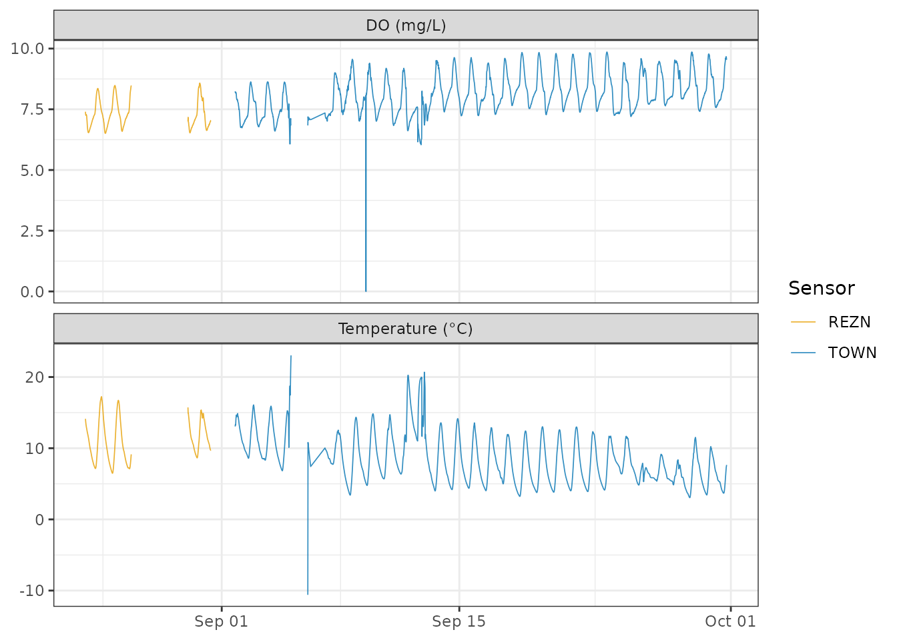

Preparing French Creek Data for Stream Metabolism Modeling
Source:vignettes/french-creek.Rmd
french-creek.RmdIntroduction
Stream metabolism models estimate gross primary production and ecosystem respiration from continuous sensor records. The streamMetabolizer package fits these models, but it requires a specific set of input variables:
| Column | Description |
|---|---|
solar.time |
Mean solar time (POSIXct, tz = “UTC”) |
DO.obs |
Observed dissolved oxygen (mg/L) |
DO.sat |
DO saturation at current conditions (mg/L) |
depth |
Mean stream depth (m) |
temp.water |
Water temperature (°C) |
light |
Photosynthetically active radiation (µmol/m²/s) |
This vignette walks through computing each of those inputs from the
french_creek dataset using preMetabolizer. The data come
from a field study on French Creek near Laramie, Wyoming, USA (Hall et
al. 2016, https://doi.org/10.1890/14-0631.1). Below we keep
NASA-derived PAR as light.obs and modeled PAR from
calc_light() as light.calc so the two light
series can be compared.
The french_creek dataset
data(french_creek)
french_creek <- french_creek |>
filter(lubridate::minute(datetime) %in% c(0, 15, 30, 45))
glimpse(french_creek)
#> Rows: 3,629
#> Columns: 4
#> $ datetime <dttm> 2012-08-23 23:15:00, 2012-08-23 23:30:00, 2012-08-23 23:45:0…
#> $ sonde <chr> "REZN", "REZN", "REZN", "REZN", "REZN", "REZN", "REZN", "REZN…
#> $ temp_C <dbl> 14.13, 13.86, 13.60, 13.36, 13.19, 13.02, 12.88, 12.76, 12.61…
#> $ DO_mgL <dbl> 7.40, 7.30, 7.27, 7.25, 7.26, 7.28, 7.25, 7.23, 7.12, 7.03, 6…The dataset covers 15-minute intervals from August 23 to September
30, 2012. Two sensors were deployed at the site: "REZN" ran
from the start of the study through September 1 at 12:50 MDT, when it
was replaced by "TOWN". The plot below shows the full
record for both sensors.
french_creek |>
tidyr::pivot_longer(
c(temp_C, DO_mgL),
names_to = "variable",
values_to = "value"
) |>
mutate(variable = recode(
variable,
temp_C = "Temperature (°C)",
DO_mgL = "DO (mg/L)"
)) |>
ggplot(aes(datetime, value, color = sonde)) +
geom_line(linewidth = 0.3, alpha = 0.8) +
facet_wrap(~variable, ncol = 1, scales = "free_y") +
scale_color_manual(values = c(REZN = "#E69F00", TOWN = "#0072B2")) +
labs(x = NULL, y = NULL, color = "Sensor") +
theme_bw()
#> Warning: Removed 272 rows containing missing values or values outside the scale range
#> (`geom_line()`).
The REZN sensor shows a cluster of anomalous negative temperature values near the end of its deployment. For the rest of this vignette we filter to the TOWN sensor, which has the longer and cleaner record.
french_creek <- french_creek |>
filter(sonde == "TOWN") |>
select(-sonde)Remove anomalous values
Negative water temperatures are physically impossible for liquid water and indicate sensor malfunction. DO values <= 5 mg/L are improbable and may indicate sensor malfunction. We’ll remove those rows.
Ensure even timesteps
streamMetabolizer requires evenly spaced data.
even_timesteps() fills any gaps with NA rows
so the interval is consistent.
french_creek <- even_timesteps(french_creek, datetime_col = "datetime")Convert datetime to solar time
streamMetabolizer works in mean solar time, which shifts UTC by the longitude-based offset so that noon falls roughly when the sun is highest. We define site constants once and reuse them throughout.
lat <- 41.33
lon <- -106.3
french_creek <- french_creek |>
mutate(
solar.time = convert_UTC_to_solartime(
datetime,
longitude = lon,
time.type = "mean solar"
)
) |>
filter(solar.time >= as.POSIXct("2012-09-18 04:05:58") &
solar.time <= as.POSIXct("2012-09-21 03:50:58"))Calculate modeled light (PAR)
calc_light() returns photosynthetically active radiation
in µmol/m²/s based on the solar geometry at the site. It takes mean
solar time as input.
french_creek <- french_creek |>
mutate(light.calc = calc_light(solar.time, latitude = lat, longitude = lon))Get barometric pressure and observed light
French Creek sits at roughly 2,195 m (7,200 ft) above sea level.
Using standard sea-level pressure (101.325 kPa) would overpredict
O2 saturation by about 20%, so we download NASA POWER surface
pressure for the site with get_nasa_data(). We also
download shortwave irradiance; get_nasa_data() converts it
to observed PAR as light.obs and interpolates NASA fields
to the same timestamps as french_creek.
french_elev_m <- get_usgs_elev(
latitude = lat,
longitude = lon,
units = "Meters"
)
nasa_dat <- get_nasa_data(
data = french_creek,
datetime_col = "datetime",
lat = lat,
lon = lon,
elev_m = french_elev_m,
params = c("PSC", "ALLSKY_SFC_SW_DWN")
) |>
select(datetime = dateTime, bp_kPa = PSC, light.obs)
#>
#> ── Downloading NASA POWER data ─────────────────────────────────────────────────
#>
#> ── Site: single site ──
#>
#> ℹ Retrieving data: 2012-09-18 to 2012-09-21
#> ✔ Finished downloading data for single site
nasa_dat
#> # A tibble: 287 × 3
#> datetime bp_kPa light.obs
#> <dttm> <dbl> <dbl>
#> 1 2012-09-18 11:15:00 69.4 0
#> 2 2012-09-18 11:30:00 69.4 0
#> 3 2012-09-18 11:45:00 69.4 0
#> 4 2012-09-18 12:00:00 69.4 0
#> 5 2012-09-18 12:15:00 69.4 42.6
#> 6 2012-09-18 12:30:00 69.4 85.1
#> 7 2012-09-18 12:45:00 69.5 128.
#> 8 2012-09-18 13:00:00 69.5 170.
#> 9 2012-09-18 13:15:00 69.5 274.
#> 10 2012-09-18 13:30:00 69.5 379.
#> # ℹ 277 more rows
french_data <- french_creek |>
left_join(nasa_dat, by = "datetime")Calculate O2 saturation
With site-adjusted pressure and water temperature,
calc_O2sat() returns the DO saturation concentration in
mg/L.
french_data <- french_data |>
mutate(
DO.sat = calc_O2sat(
temp_water = temp_C,
atmo_press = bp_kPa,
units = "kPa"
)
)
summary(french_data$DO.sat)
#> Min. 1st Qu. Median Mean 3rd Qu. Max.
#> 7.211 7.723 8.367 8.257 8.781 9.153Assemble the final tibble
The final step restructures the data and retains both observed and calculated light.
sm_input <- french_data |>
transmute(
solar.time = solar.time,
DO.obs = DO_mgL,
DO.sat = DO.sat,
depth = 0.16,
temp.water = temp_C,
light.obs = light.obs,
light.calc = light.calc
)
head(sm_input)
#> # A tibble: 6 × 7
#> solar.time DO.obs DO.sat depth temp.water light.obs light.calc
#> <dttm> <dbl> <dbl> <dbl> <dbl> <dbl> <dbl>
#> 1 2012-09-18 04:10:58 8.4 9.05 0.16 3.58 0 0
#> 2 2012-09-18 04:25:58 8.42 9.06 0.16 3.54 0 0
#> 3 2012-09-18 04:40:58 8.42 9.07 0.16 3.5 0 0
#> 4 2012-09-18 04:55:58 8.42 9.08 0.16 3.46 0 0
#> 5 2012-09-18 05:10:58 8.44 9.09 0.16 3.42 42.6 0
#> 6 2012-09-18 05:25:58 8.47 9.10 0.16 3.37 85.1 0
sm_input |>
mutate(DO.pctsat = 100 * DO.obs / DO.sat) |>
tidyr::pivot_longer(
c(DO.obs, DO.sat, DO.pctsat),
names_to = "variable",
values_to = "value"
) |>
mutate(units = ifelse(variable == "DO.pctsat", "DO\n(% sat)", "DO\n(mg/L)")) |>
ggplot(aes(solar.time, value, color = variable)) +
geom_line(linewidth = 0.3) +
facet_grid(units ~ ., scales = "free_y") +
labs(x = "Solar time", y = NULL, color = "Variable") +
theme_bw()
labels <- c(
depth = "depth~(m)",
temp.water = "water~temp~(degree*C)",
light.obs = "atop(observed~PAR, (mu*mol~m^{-2}~s^{-1}))",
light.calc = "atop(calculated~PAR, (mu*mol~m^{-2}~s^{-1}))"
)
sm_input |>
tidyr::pivot_longer(
c(depth, temp.water, light.obs, light.calc),
names_to = "variable",
values_to = "value"
) |>
mutate(
variable = ordered(
variable,
levels = c("depth", "temp.water", "light.obs", "light.calc")
)
) |>
ggplot(aes(solar.time, value, color = variable)) +
geom_line(linewidth = 0.3) +
facet_grid(
variable ~ .,
scales = "free_y",
labeller = ggplot2::as_labeller(labels, label_parsed)
) +
scale_color_manual(
values = c(
depth = "#333333",
temp.water = "#e8000d",
light.obs = "#f2a900",
light.calc = "#f5c542"
)
) +
labs(x = "Solar time", y = NULL, color = "Variable") +
theme_bw()
To fit a model with streamMetabolizer::metab(), choose
either light.obs or light.calc and rename that
column to light. See the streamMetabolizer
documentation for details on model fitting and interpreting
metabolism estimates.
References
Hall, R. O., Jr., Tank, J. L., Baker, M. A., Rosi-Marshall, E. J., & Hotchkiss, E. R. (2016). Metabolism, gas exchange, and carbon spiraling in rivers. Ecosystems, 19(1), 73–86. https://doi.org/10.1890/14-0631.1